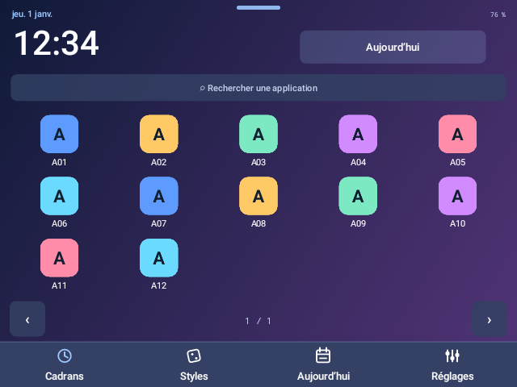
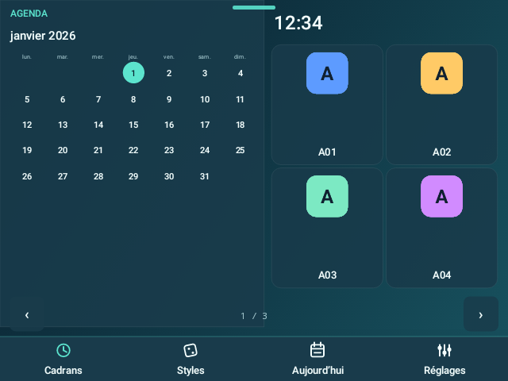
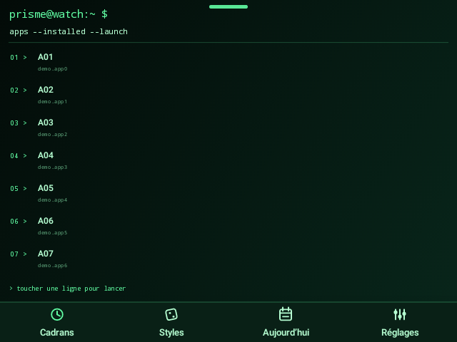
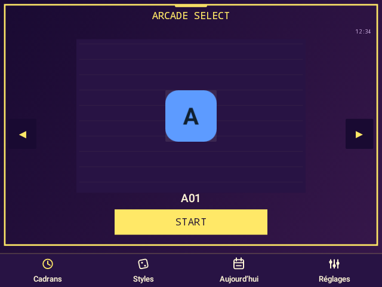
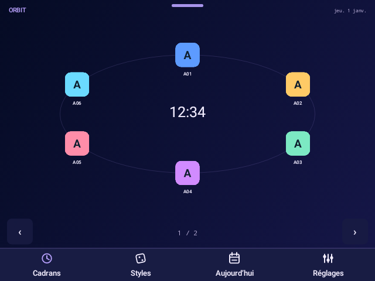
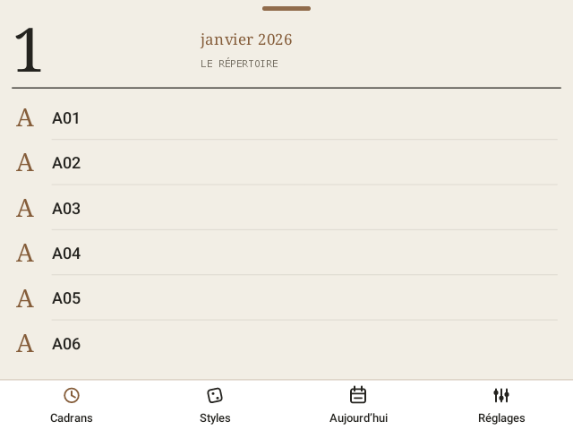
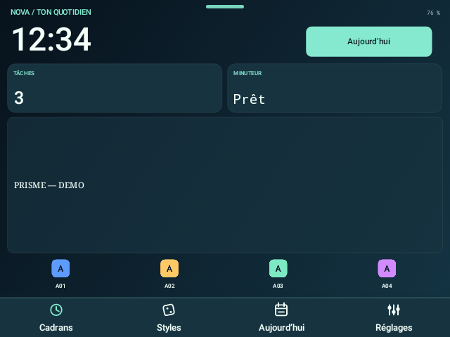
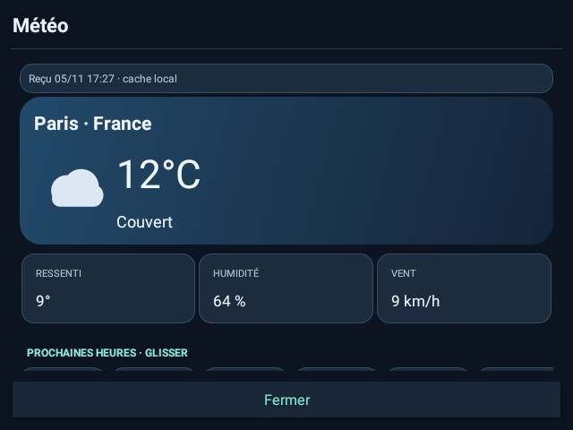
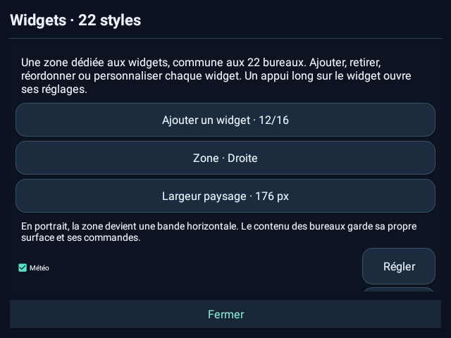
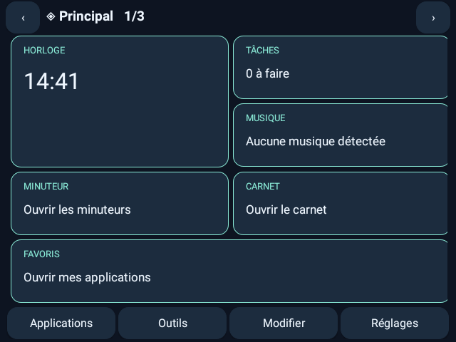

Météo interactive
Conditions réelles, ressenti, humidité, vent, douze prochaines heures et cinq jours. Ville manuelle, Celsius/Fahrenheit, fréquence au premier plan et cache daté. Touchez le widget pour ouvrir les prévisions.
PRISME 6 · MONTRES ANDROID RECTANGULAIRES
22 bureaux distincts, 13 widgets personnalisables et une météo interactive. Deux centres de contrôle repensés, vos outils quotidiens et un éditeur PC complet.
APK signé · Android complet 7.1+ · sans compte, publicité ou télémétrie
Éditeur PC complet hors ligne — ZIP ↓
LE BUREAU RESTE AU CENTRE
Calendrier, terminal, arcade, constellation, papier, instruments… Le dessin et la disposition changent réellement. Le style choisi reste votre bureau. Dans les réglages, le bouton 22 styles ouvre le sélecteur avec recherche et aperçus.






Aperçus du moteur Android avec catalogue fictif. Les noms de marques des styles indiquent une inspiration visuelle, sans affiliation ni compatibilité matérielle implicite.
LE NOUVEAU MOTEUR DE WIDGETS
Ajoutez, retirez et réordonnez vos widgets sans abandonner votre bureau. Une zone dédiée réserve leur place : bande latérale en paysage, ruban défilant en portrait. Chaque widget peut apparaître sur tous les styles ou seulement sur ceux que vous choisissez.
Conditions réelles, ressenti, humidité, vent, douze prochaines heures et cinq jours. Ville manuelle, Celsius/Fahrenheit, fréquence au premier plan et cache daté. Touchez le widget pour ouvrir les prévisions.
Météo, horloge, musique, batterie, tâches, notes, minuteurs, calendrier, heure mondiale, système, concentration, raccourcis et chronomètre. Des accès directs à de vrais outils locaux.
Six apparences : signature du style, verre, plein, contour, minimal et néon. Trois tailles, accents, opacité du fond, arrondis, taille du texte, titre, détails et variantes. Horloges numériques/analogiques, secondes et fuseaux.


Open-Meteo est facultatif et désactivé par défaut. Après activation, le fournisseur reçoit votre adresse IP et la recherche de ville ou ses coordonnées. Aucun GPS. Un cache ancien ou un réseau désactivé sont signalés. Prévisions fournies par Open-Meteo ; service gratuit destiné aux usages non commerciaux.
UNE OPTION À CÔTÉ DE VOTRE BUREAU
Horloge, tâches, minuteur, musique, carnet, favoris et état de la montre : placez jusqu’à huit blocs par page, sur une grille de quatre colonnes et quatre lignes. Trois pages sont prêtes ; vous pouvez aller jusqu’à cinq.
Déplacez au doigt, changez la taille, choisissez une des six palettes et annulez la dernière modification. Les chevauchements et sorties d’écran sont refusés.
Pour revenir au style sélectionné : touchez Bureau dans le panneau, utilisez Retour Android ou choisissez un style. Les cartes restent enregistrées et se rouvrent depuis Outils.

L’ÉDITEUR PC OFFICIEL
Ouvrez l’éditeur dans votre navigateur ou téléchargez le paquet hors ligne. Aucun logiciel à installer, serveur à lancer ou compte à créer.
Les autres réglages du profil sont conservés. Importer une disposition ne remplace pas le bureau actif : l’ouverture des cartes reste votre choix.
Le profil reste dans la mémoire du navigateur. Aucun contenu n’est envoyé au site. Sans export réel, l’éditeur propose un aperçu et empêche la création d’un profil incomplet.
index.html pour les nouveaux widgets des 22 styles et les cartes facultatives.
classic-studio.html pour les réglages historiques des bureaux.
Windows, macOS ou Linux · navigateur moderne · extraire tout le ZIP puis ouvrir index.html
UTILE AU QUOTIDIEN
Huit minuteurs nommés, pause/reprise, chronomètre avec tours, concentration et horloge de table.
Commandes simples ou sessions enrichies facultatives : titre, artiste et choix du lecteur lorsqu’il fournit ces informations.
Carnet local à sauvegarde automatique, checklist et recherche, accessibles depuis le bureau et les cartes.
Quatre opérations décimales ; longueur, masse, température et durée, entièrement hors ligne.
Volume flottant, 24 présentations de batterie, 12 palettes, position et taille réglables, diagnostic des sources.
Sauvegardes privées, coffres chiffrés exportables, validation des imports et mode de secours.
iOS : boutons circulaires groupés, module musical compact et curseurs verticaux. Android : grande horloge, boutons Material horizontaux, réglages horizontaux et carte musicale large. Ordre des raccourcis, couleurs, transparence, taille, position et gestes. Les commandes dépendent des possibilités offertes par Android ; certaines ouvrent un réglage système.
Dock, Sense et Doctor complètent l’ensemble : raccourcis flottants facultatifs, règles locales et diagnostic sans télémétrie.
EXPLOREZ LES INTERFACES
Galerie du bureau classique et des outils, dans sept langues. Les images de démonstration utilisent des applications et contenus fictifs ; les nouvelles captures DM100 sont identifiées séparément sur cette page.
PRISME 6.0.1
La signature d’origine est conservée. Les notes, tâches et réglages ne sont pas effacés. Les fonctions flottantes et l’accès musical enrichi ont des autorisations distinctes.
BIEN COMPRENDRE PRISME
Ils restent le cœur de PRISME. Le bouton Styles du bureau et le bouton permanent 22 styles des réglages ouvrent le sélecteur, sa recherche et les aperçus. Choisir un style l’affiche immédiatement.
Touchez Bureau en haut du panneau, utilisez Retour Android ou choisissez un style. Votre disposition de cartes est conservée ; vous pouvez la rouvrir dans Outils.
Non. L’éditeur prépare un fichier JSON. Après copie et import sur la montre, PRISME utilise ce profil localement. Le ZIP PC fonctionne sans serveur ni connexion permanente.
Android l’exige pour accéder aux sessions musicales enrichies. Ce mode est facultatif et désactivé par défaut. PRISME utilise les sessions sans lire ni conserver les messages des notifications ; les commandes simples restent disponibles sans cet accès.
PRISME déclare Internet pour la météo Open-Meteo facultative, désactivée par défaut. Après activation, seules les recherches de ville et les prévisions contactent ce fournisseur. Notes, tâches et favoris restent locaux. Les JSON ordinaires sont en clair ; les coffres exportables sont chiffrés avec une phrase de passe. Le site n’ajoute ni compte ni suivi analytique.
Une DM100 sous Android 7.1.1 sert de référence. D’autres modèles, l’autonomie prolongée et tous les lecteurs tiers ne sont pas certifiés. Le firmware peut retarder les alarmes ou limiter rotation, superpositions et lecture en arrière-plan. Aucun statut de certification Play Protect n’est revendiqué.
PRISME est une application de bureau pour Android complet, pas un remplacement du système. Aucun root ou changement des services Google n’est nécessaire. Wear OS, watchOS, Tizen et les systèmes sans APK ordinaires ne sont pas des cibles validées.
GUIDES ET PROJET OUVERT